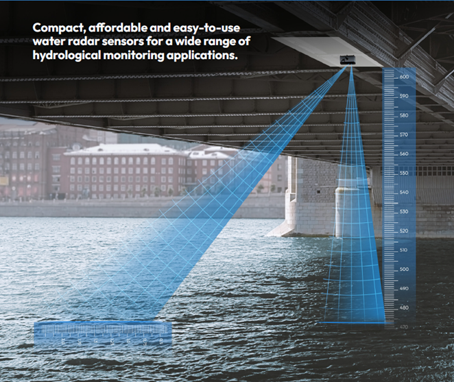

Especialistas em monitoramento ambiental, dados, TI e sensores Soluções de engenharia orientadas por dados e lideradas por tecnologia há 60 anos.
A KISTERS oferece uma linha de pluviômetros de balde basculante confiáveis e precisos, medidores de precipitação com princípio de pesagem, sensores meteorológicos, o inovador sensor de granizo e acessórios associados (aquecedores, protetores de pássaros, peças sobressalentes) e dispositivos de calibração para uso em campo e laboratório. Além disso, a KISTERS projeta e fabrica sistemas de relatórios personalizados, incluindo o RainTrak e produtos de estações meteorológicas automáticas.Não é exatamente o que você precisa? A oficina de engenharia e fabricação da KISTERS e a equipe de engenharia experiente têm a capacidade de fornecer soluções personalizadas para qualquer um dos seus requisitos de monitoramento.
Transferência eficiente de dados de qualquer sensor ou fonte de dados remota para o seu sistema de gerenciamento de dados.
A KISTERS oferece diversos dataloggers confiáveis e multifuncionais, com transmissão de dados via tecnologia celular, LoRa WAN, rádio ou satélite. Os dispositivos são a base ideal para a construção de redes de Internet das Coisas. As funcionalidades dos dataloggers de baixo consumo de energia incluem coleta, processamento e armazenamento de dados, controle de valores limite e alarmes. Nossos itens de hardware são complementados pelos produtos HydroTel e Global Data Network que oferecem relatórios diretos de dados de campo com algumas funcionalidades de controle.Não é exatamente o que você precisa? A oficina de engenharia e fabricação da KISTERS e a equipe de engenharia experiente têm a capacidade de fornecer soluções personalizadas para qualquer um dos seus requisitos de monitoramento.
Os avanços no monitoramento ambiental e na TI disponibilizaram uma gama mais ampla de sensores para atender a finalidades específicas. No entanto, surgem complicações com o uso de dispositivos de vários fabricantes. Além disso, existem mais protocolos de transferência de dados de monitoramento remoto do que nunca.Estamos empenhados em superar obstáculos à coleta, acesso e usabilidade de dados. KISTERS mantém o fluxo de seus dados.Nossos dataloggers compactos, confiáveis e multifuncionais transmitem dados via celular, Internet, LoRaWAN, rádio ou tecnologias de satélite. Os equipamentos robustos e de baixo consumo de energia coletam, processam e armazenam dados. O design de vários slots de telemetria permite redundância de comunicação. Saiba mais sobre nosso hardware de aquisição de dados . Além disso, nossos produtos de software harmonizam muitos protocolos e processos de transferência de dados de monitoramento remoto exigidos pela ampla gama de dispositivos de monitoramento de vários fabricantes.
Radares de nível com sensor de velocidade, modelo Hyquant L+V da marca Kisters.São sensores compactos, econômicos e de fácil manuseio para a realização do monitoramento hidrológico. O modelo Hyquant permite o upgrade do sensor de nível básico para uma combinação de nível+velocidade sem que sejam necessárias intervenções técnicas, requerendo apenas uma atualização de software.
As principais características técnicas desse sensor são:
- Frequência all-in-one de 60 Ghz de nível e velocidade*;
- Alcance de nível varia de 0.10m a 20m e de velocidade 0.05 m/s a 15m/s, tendo uma resolução de 1mm tanto para nível quanto para velocidade;
- Acurácia para nível é de 2mm e para velocidade varia de 1% (de 0.02 m/s a 4,5 m/s) a 2% (de 4.5 m/s a 15 m/s).